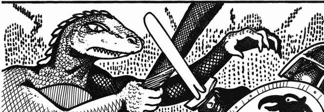
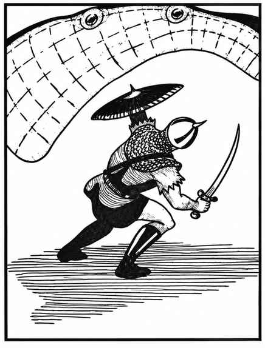

穹顶潜伏怪 · Lurker Above

 |
|
穹顶潜伏怪是只在地下出现的食肉生物。若洞室或洞穴足够大，最多可能出现 4 只，但通常只有 1 只。它能缓慢地沿表面爬行（每轮 1 寸），也能利用体内产生并排入囊袋的气体获得中性浮力，再扇动翼状附肢飞行。
它以六面骰掷出 1–4 时突袭猎物。受到惊扰时，穹顶潜伏怪会从天花板落下，以坚韧的“翅膀”褶皱罩住下方所有生物。挤压每轮造成 1–6 点伤害；无论如何，受困者都会在 2–5 轮内窒息，除非杀死潜伏怪脱困。穹顶潜伏怪没有智能，会战斗至死。被它裹住的猎物无法战斗，除非手边已有短小且可单手使用的武器。
外观与伪装。 这种可怕的怪物有些像大型蝠鲼，灰色腹部的纹理酷似石头。它通常附着在天花板上，除非被实际戳到，否则几乎无法察觉（有 90% 概率不会被发现）。